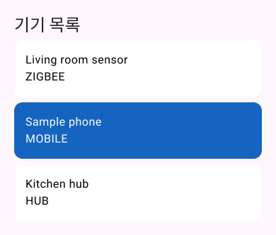

SMARTTHINGS · A2UI POC
Gen UI POC
프롬프트를 저장하고 휴대폰 앱에서 새로고침하세요.
API 응답
설정 저장 후 API를 호출하면 생성한 메시지를 볼 수 있습니다.
아직 호출하지 않았습니다.
Figma에서 휴대폰까지
Figma 원본 열기

- Figma의 카드 배경색과 세로 배치, 텍스트 레이어를 읽었습니다.
- 에이전트가 지원 카탈로그와 데이터 필드에 매핑했습니다.
- API는 실제 SmartThings 목록을 조회하고 기기마다 값을 바인딩합니다.
- 휴대폰의 새로고침으로 A2uiSurface에 표시합니다.
이번 시연은 에이전트가 가져온 디자인 스냅샷을 사용합니다. Figma 변경은 다시 가져온 뒤 반영됩니다. 프롬프트 편집은 ‘자연어 프롬프트’ 모드에서 적용됩니다.
Figma에서 읽은 속성과 변환한 레이아웃
휴대폰에서 보기
앱의 새로고침은 아래 API를 호출합니다. 프롬프트를 변경하면 새 배치를 생성하고, 같은 프롬프트에서는 저장한 배치를 재사용하며 기기 목록을 다시 조회합니다.
앱에는 위 주소와 앱 연결 키를 설정합니다. 테스트 앱에는 기본 API 주소가 포함됩니다. 앱 연결 키는 USB 설치 시 설정하거나 앱의 연결 설정에 붙여 넣으세요. 휴대폰에서 대시보드 주소에 접속할 수 있어야 합니다.
Android APK 다운로드첫 범위는 계정의 기기 목록입니다. 이름과 종류를 표시하며, 목록에 없는 실시간 상태와 방 이름은 ‘상태 미조회’, ‘방 정보 미조회’로 표시합니다.